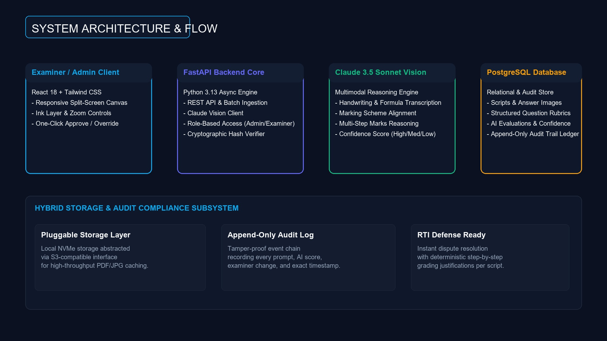
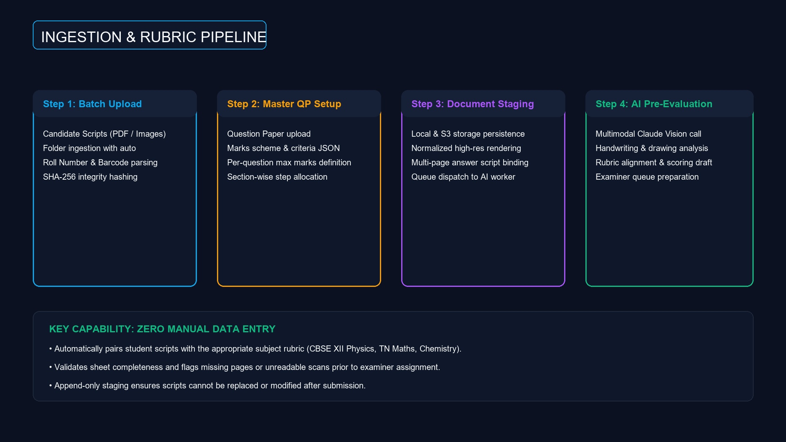
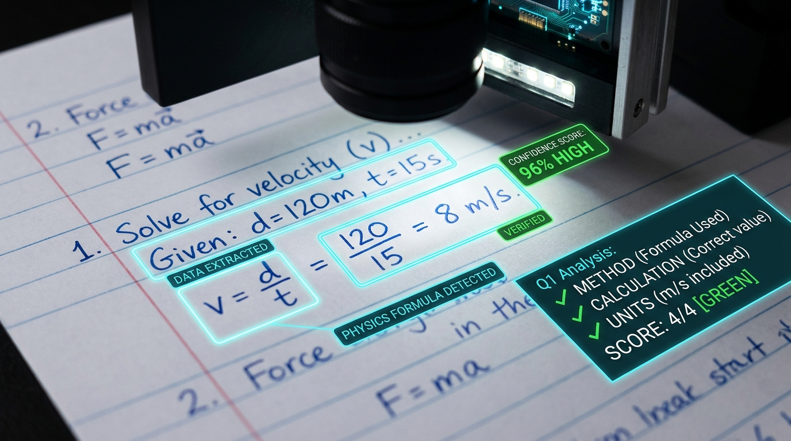
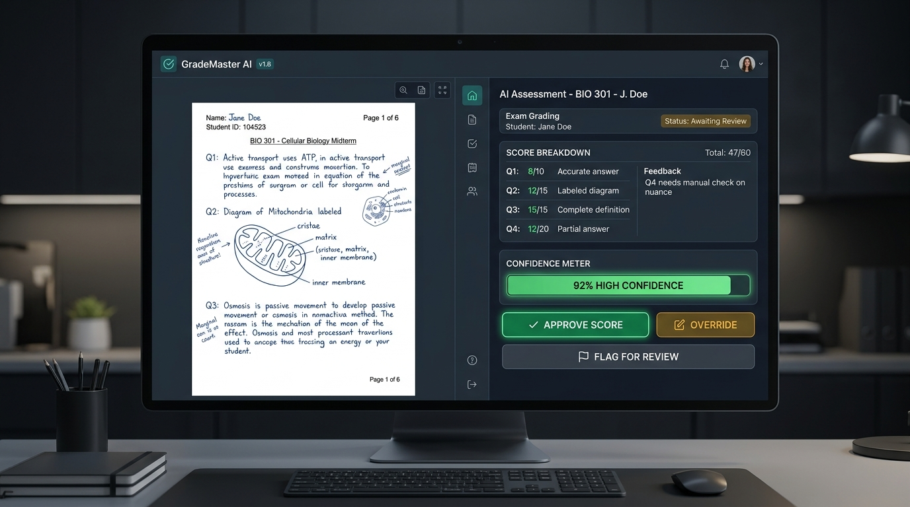
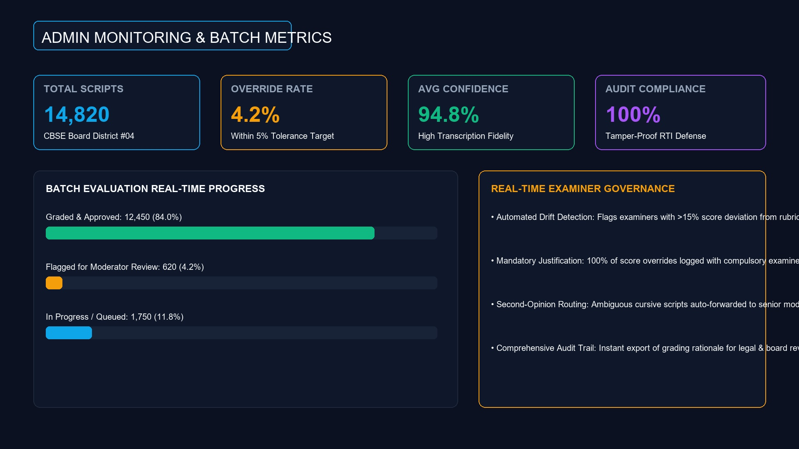
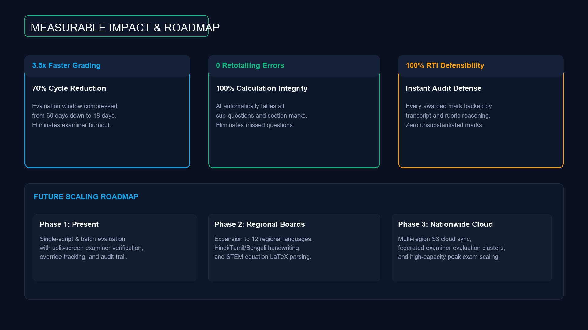

AI-Assisted Theory Exam Evaluation
High-Trust Vision AI Scoring with Human-in-the-Loop Examiner Review
Multimodal Handwriting OCR
Transcribes cursive handwriting and STEM equations via Claude Vision.
Rubric-Aligned Evaluation
Maps student steps deterministically against board marking schemes.
100% Human Examiner Control
Examiner reviews, approves, or overrides with mandatory typed reason.
The Crisis in Theory Exam Evaluation
Manual evaluation cannot keep pace with millions of handwritten board exams
Massive Script Backlog
Millions of physical answer sheets processed under grueling deadlines.
Examiner Fatigue & Variance
Grading drift and retotalling errors spike after hours of continuous grading.
Zero Defense in Disputes
RTI and re-evaluation requests lack auditable, step-by-step mark justification.
Human-in-the-Loop AI Grading
AI assists the examiner — humans retain final institutional authority
AI Does the Heavy Lifting
Automates handwriting transcription, rubric mapping, and draft scoring in seconds.
Examiner Makes the Decision
One-click 'Approve', 'Override' (with required rationale), or 'Flag' for moderator.
Transparent Confidence Meter
Color-coded Green/Yellow/Red confidence rating visible at a single glance.
Production Tech Stack & Flow
Built with modern, enterprise-grade open-source and cloud infrastructure
Frontend Canvas
React 18 + Tailwind CSS with split-screen synchronized viewer.
Backend Core
FastAPI Python engine with asynchronous queue & S3-compatible storage.
Intelligence & Storage
Claude 3.5 Sonnet Vision API + PostgreSQL append-only audit ledger.

Answer Sheets & Master Rubric
Frictionless ingestion of student scripts and board marking schemes
Batch Folder & PDF Ingestion
Upload entire examination centers in bulk with automated roll/barcode parsing.
Master Question Paper Sync
Structured marking criteria JSON with maximum marks and sub-step allocations.
SHA-256 Tamper Proofing
Every script is cryptographically hashed upon upload to prevent substitution.

Handwriting to Rubric Reasoning
Multi-pass multimodal intelligence evaluates each answer step-by-step
Cursive & Formula Parsing
Vision LLM deciphers handwriting, math equations, and diagram annotations.
Rubric Criteria Alignment
Evaluates method, intermediate calculations, units, and final answers.
Color-Coded Confidence
High (>90% Green), Medium (75-90% Yellow), Low (<75% Red) quality index.

Split-Screen Examiner Experience
Clean, distraction-free environment built for hours of efficient grading
Side-by-Side Canvas
High-res original answer script on the left; AI rubric breakdown on the right.
One-Click Actions
Instantly Approve AI marks or Flag for Senior Moderator review.
Mandatory Override Rationale
Hard requirement: Examiner must enter a typed reason to override any score.

Append-Only Audit Trail & RTI Defense
Complete transparency and institutional accountability for every mark
Immutable Event Ledger
Every AI suggestion, examiner override, timestamp, and user ID logged permanently.
Zero Black-Box Mystery
Every awarded half-mark is backed by transcribed text and rubric criteria.
Instant Legal & RTI Defense
Export certified evaluation reports with examiner signatures in seconds.
Admin Dashboard & Quality Control
Macro-level visibility across examination centers and examiner cohorts
Real-Time Pipeline Status
Live counters for Pending, Graded, and Flagged scripts across batches.
Override Rate Tracking
Monitors examiner divergence to detect ambiguous rubrics or grading bias.
Average Confidence Index
Guarantees scan quality and flags illegible batches automatically.

Transformational Impact & Future
Scaling trust, speed, and accuracy for state and national exam boards
70% Faster Results
Reduces evaluation turnaround from 60 days to under 18 days.
Zero Retotalling Errors
Automated tallying eliminates missed questions and mathematical mistakes.
Next Generation Scaling
Support for 12 regional Indic languages, math LaTeX, and multi-region cloud sync.
